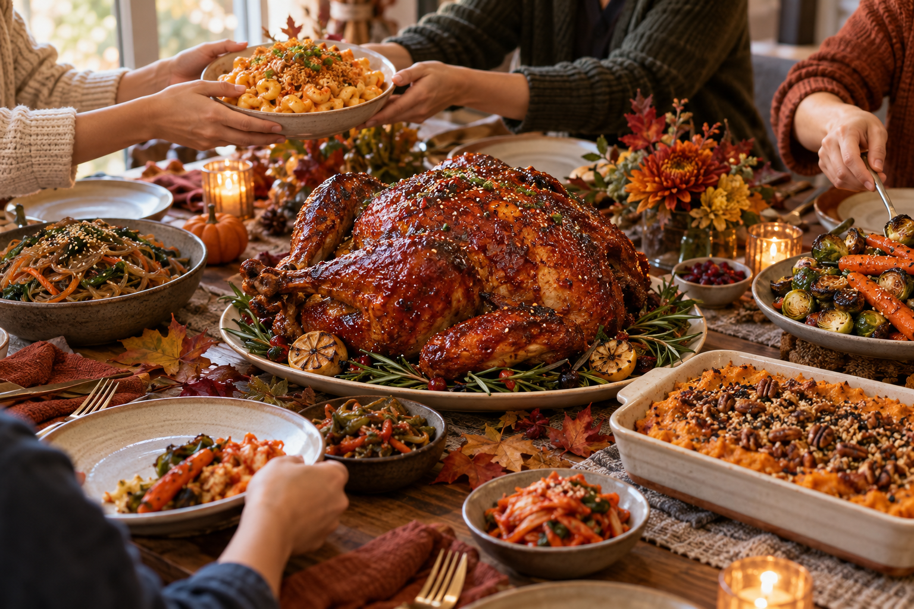
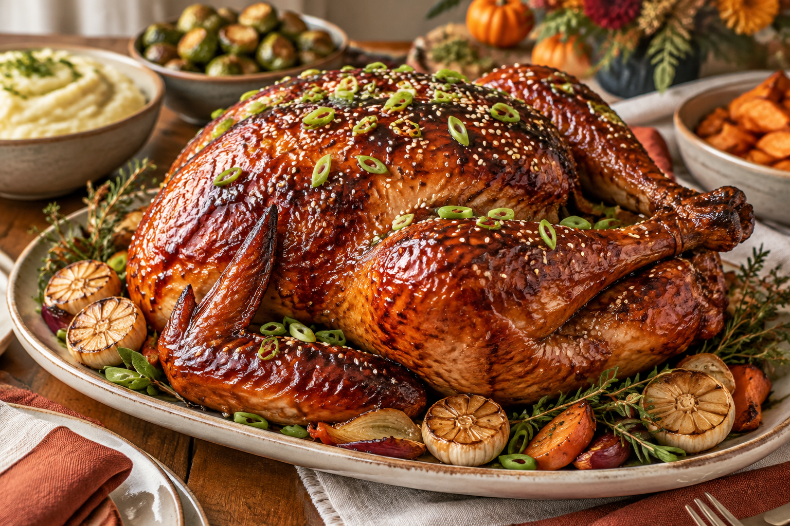
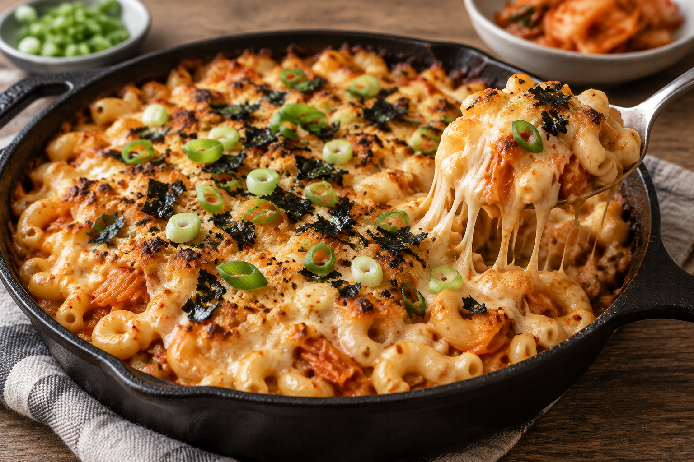
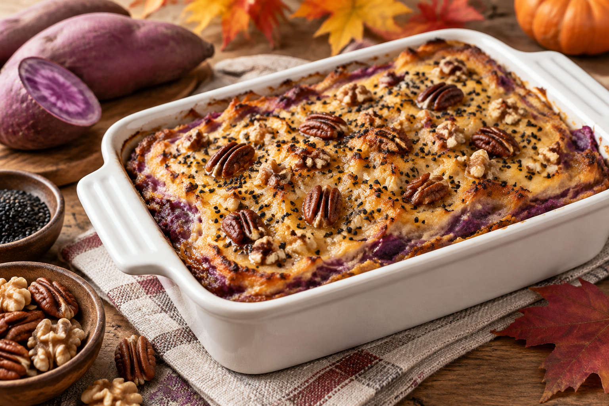
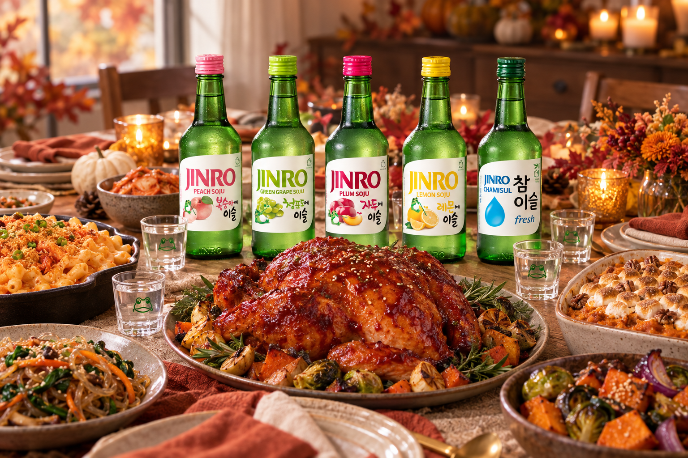

This Thanksgiving, Add a Korean Twist: 5 Korean Fusion Dishes to Try
From gochujang-glazed turkey to japchae stuffing, here are five easy ways to bring Korean flavors to your Thanksgiving table this year.
Every November, friends and families across the US gather for Thanksgiving. Roast turkey, mashed potatoes, pumpkin pie and cranberry sauce are the classics.
But more people are mixing new flavors into the holiday menu. Gochujang, kimchi and other Korean pantry staples are now easy to find in many grocery stores, and Korean-inspired holiday dishes keep popping up on social feeds.
This year, why not try something a little different? Here are five Korean-inspired Thanksgiving dishes worth adding to your table.

1. Gochujang-Glazed Turkey
Classic roast turkey is usually seasoned with butter, herbs, salt and pepper. The Korean version adds a glaze made with gochujang (Korean chili paste), honey, minced garlic and a splash of soy sauce.
Brush the glaze over the turkey as it roasts. The skin turns a glossy red-brown, and the flavor becomes sweet, savory and a little spicy.
Flavor note: savory, sweet and spicy

2. Kimchi Mac and Cheese
Mac and cheese is one of the most popular sides on the Thanksgiving table. This year, try adding kimchi.
Mix chopped kimchi into the macaroni and cheese sauce, then bake it in the oven. The tangy heat of kimchi balances the richness of the cheese.
Finish with chopped scallions or crumbled roasted seaweed for an extra Korean touch.
Flavor note: rich, tangy and savory

3. Korean Sweet Potato Casserole
Sweet potato casserole is usually made with mashed sweet potatoes, butter, cinnamon and marshmallows.
For a Korean version, use goguma, Korean sweet potatoes known for their sweet, soft texture. Mash steamed goguma with a little butter and milk, then top it with nuts, black sesame seeds or a drizzle of maple syrup before baking.
Flavor note: sweet, nutty and comforting

4. Doenjang Maple Roasted Vegetables
Pair doenjang (Korean soybean paste) with maple syrup for an easy roasted vegetable side.
Toss carrots, Brussels sprouts and squash with a little doenjang, maple syrup, olive oil and black pepper, then roast until caramelized. The savory doenjang balances the sweetness of the maple syrup.
Flavor note: earthy, sweet and umami

5. Japchae Stuffing
Traditional stuffing is made with bread cubes, onion, celery and herbs. For a Korean twist, borrow from japchae, stir-fried glass noodles with vegetables.
Start with sweet potato glass noodles, then add carrots, spinach, shiitake mushrooms, onion and a little beef. Season with soy sauce, sesame oil and minced garlic.
Serve it as its own side or as a new take on stuffing. The chewy noodles make it stand out on the table.
Flavor note: chewy, savory and umami

Match Your Thanksgiving Table with JINRO
These dishes range from sweet to savory to spicy. If you would like to pair them with JINRO, choose one to match your favorite dish and serve it chilled.
Gochujang-Glazed Turkey × JINRO Peach
The juicy peach flavor of JINRO Peach softens the heat of the gochujang glaze.
Kimchi Mac and Cheese × JINRO Green Grape
JINRO Green Grape adds a refreshing fruit note to the rich, cheesy bake.
Korean Sweet Potato Casserole × JINRO Plum
The sweet and tangy flavor of JINRO Plum goes well with nutty roasted sweet potato.
Doenjang Maple Roasted Vegetables × JINRO Lemon
JINRO Lemon brings a bright citrus note to the savory, caramelized vegetables.
Japchae Stuffing × JINRO Chamisul Fresh
JINRO Chamisul Fresh has a clean, smooth character that suits the soy and sesame flavors of japchae.

A Table with Room for Every Flavor
All five dishes come from one simple idea: different food cultures can share the same table.
In Korea, sharing food is a big part of how people spend time together, from home cooking to dinners with friends. That fits right in with the spirit of Thanksgiving.
Try one Korean-inspired dish this year and see how it fits on your table. Happy Thanksgiving!
To discover more Korean food stories and JINRO pairings, visit JINRO Global’s official Instagram, Facebook, and YouTube.
This article is intended for readers of legal drinking age. Please enjoy JINRO responsibly and in moderation, and never drink and drive.